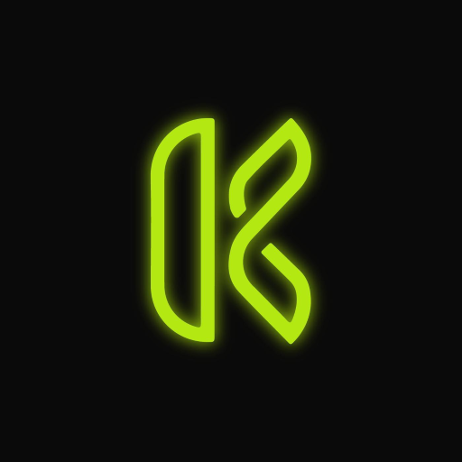

Para publicar directo desde acá hace falta una clave de GitHub. Se pide una sola vez y queda guardada en este navegador.
La clave queda sólo en este navegador y únicamente permite cambiar los archivos de este sitio. Si usás una computadora compartida, mejor usá Descargar archivo y no la guardes.